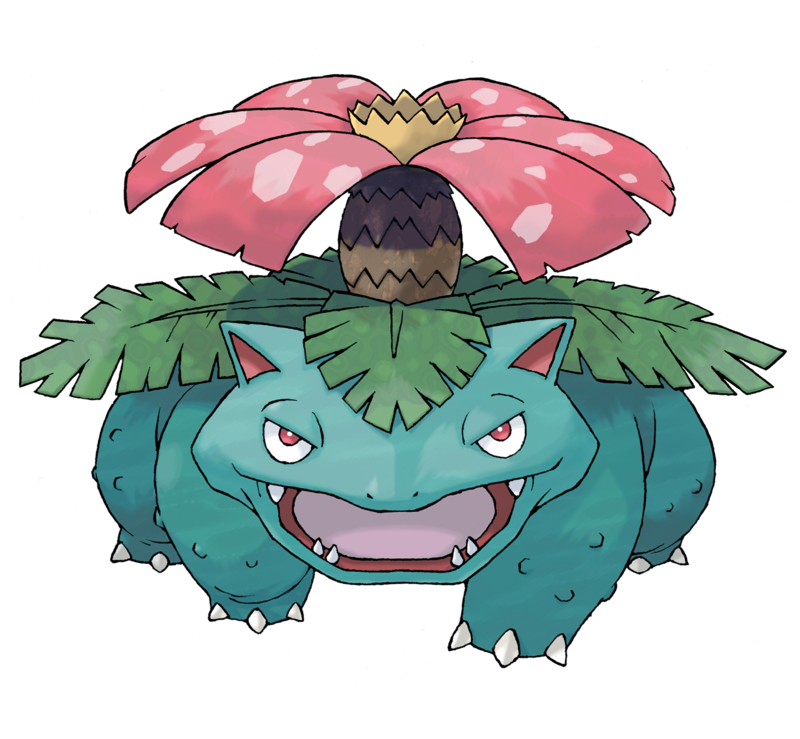
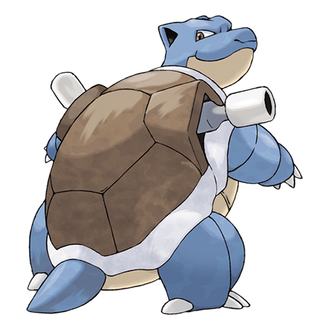
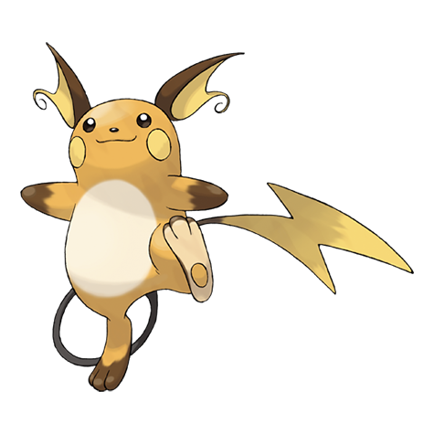

Venusaur: una gran flor sobre el lomo
Conocé sus tipos, características y evoluciones.
Bienvenido a Mi Pokédex, un espacio para explorar el mundo Pokémon. Encontrá información sobre distintos Pokémon y conocé las características que hacen especial a cada uno.
Recorré las fichas, descubrí sus tipos y aprendé sobre sus evoluciones. Desde los primeros compañeros de aventura hasta otros Pokémon que vale la pena conocer.

Mi Pokédex es un proyecto creado por una fan para compartir información de forma sencilla y visual. Cada ficha reúne una imagen, el nombre, el tipo y una breve descripción del Pokémon.
Este sitio forma parte de un trabajo práctico de Diseño y Desarrollo Web. Es un proyecto educativo no oficial, pensado para quienes quieren empezar a conocer el universo Pokémon.
Explorá esta selección y descubrí qué distingue a cada uno.
Los Pokémon pueden cambiar de aspecto al evolucionar. En esta galería te mostramos cuatro evoluciones de los protagonistas de nuestra selección.

Venusaur: una gran flor sobre el lomo
Charizard: alas y una cola con fuego.

Blastoise: un caparazón equipado con dos cañones.

Raichu: la evolución de Pikachu.
Esta Pokédex puede seguir creciendo. Si querés sugerir un Pokémon o compartir una corrección, podés hacerlo en futuras versiones del proyecto.
Enviar una sugerencia